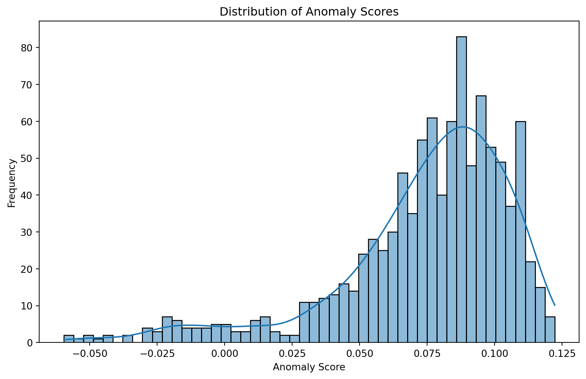
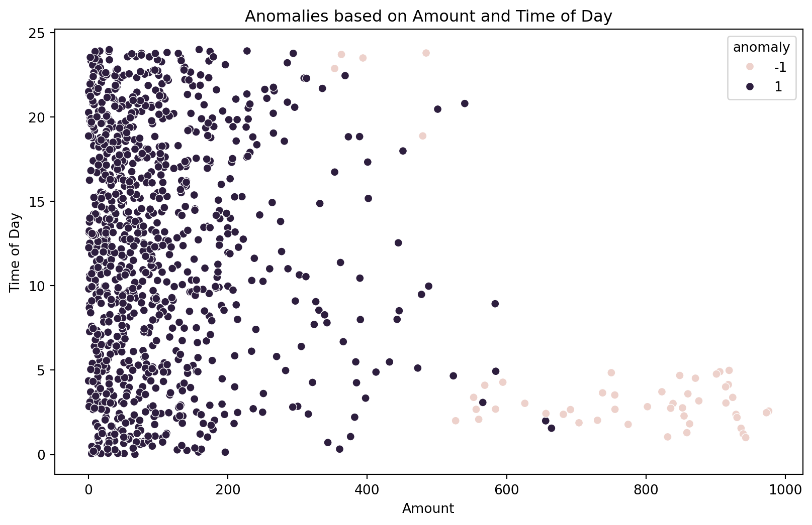

import pandas as pd
import numpy as np
# Set random seed for reproducibility
np.random.seed(42)
# Number of data points
n_samples = 1000
# Generate categorical features
transaction_types = ['online', 'in-store', 'mobile']
countries = ['US', 'Canada', 'Mexico']
transaction_type = np.random.choice(transaction_types, n_samples)
country = np.random.choice(countries, n_samples)
# Generate event-based features
amount = np.random.exponential(scale=100, size=n_samples)
time_of_day = np.random.uniform(low=0, high=24, size=n_samples)
day_of_week = np.random.randint(low=1, high=8, size=n_samples)
# Create a DataFrame
df = pd.DataFrame({
'transaction_type': transaction_type,
'country': country,
'amount': amount,
'time_of_day': time_of_day,
'day_of_week': day_of_week
})
# Introduce anomalies (fraudulent transactions)
fraud_indices = np.random.choice(n_samples, size=int(n_samples * 0.05), replace=False)
df.loc[fraud_indices, 'amount'] = np.random.uniform(low=500, high=1000, size=len(fraud_indices))
df.loc[fraud_indices, 'time_of_day'] = np.random.uniform(low=1, high=5, size=len(fraud_indices))
# Save the dataset
df.to_csv('fraud_data.csv', index=False)Fraud detection is a critical task across various industries, from finance to e-commerce. Traditional rule-based systems often struggle to keep up with the evolving tactics of fraudsters. Machine learning offers a powerful alternative, and in this blog post, we’ll explore how to use the Isolation Forest algorithm with Python and scikit-learn to identify fraudulent activities.
Building a Synthetic Fraud Dataset
First, let’s create a synthetic dataset that mimics typical transactional data with both categorical and event-based features. We’ll use the pandas and numpy libraries for this:
This code generates a dataset with features like transaction type, country, amount, time of day, and day of week. We then introduce anomalies by altering the amount and time_of_day for a small subset of transactions, simulating fraudulent behavior.
Understanding the Isolation Forest Algorithm
The Isolation Forest algorithm is an unsupervised anomaly detection method that identifies outliers by isolating them from the rest of the data. It works on the principle that anomalies are “few and different,” meaning they are rare and have distinct feature values.
Here’s a breakdown of how it works:
Building Isolation Trees: The algorithm constructs multiple isolation trees. Each tree is built by recursively partitioning the data using randomly selected features and split values. Anomalies, being different, are isolated closer to the root of the tree with fewer partitions.
Path Length: The average path length from the root to an anomaly is shorter than for normal data points.
Anomaly Score: An anomaly score is calculated for each data point based on the average path length across all trees. Higher scores indicate a higher likelihood of being an anomaly.
Implementing Isolation Forest with Scikit-learn
Now, let’s use the Isolation Forest algorithm from scikit-learn to identify fraudulent transactions in our dataset:
import pandas as pd
from sklearn.ensemble import IsolationForest
from sklearn.preprocessing import OneHotEncoder
from sklearn.compose import ColumnTransformer
import matplotlib.pyplot as plt
import seaborn as sns
# Load the dataset
df = pd.read_csv('fraud_data.csv')
# Separate features and target variable (we don't have a true target, but we'll create labels later)
X = df.copy()
print(X.head()) transaction_type country amount time_of_day day_of_week
0 mobile Mexico 63.522285 17.242302 5
1 online Mexico 136.366853 22.896795 6
2 mobile Mexico 205.441945 17.313443 7
3 mobile Mexico 56.855244 20.709132 2
4 online US 4.464351 0.050492 4# Preprocess categorical features using one-hot encoding
categorical_features = ['transaction_type', 'country']
preprocessor = ColumnTransformer(
transformers=[('cat', OneHotEncoder(), categorical_features)],
remainder='passthrough'
)
X_encoded = preprocessor.fit_transform(X)
# Create and train the Isolation Forest model
model = IsolationForest(contamination=0.05, random_state=42) # Contamination is the expected proportion of anomalies
model.fit(X_encoded)
# Get anomaly scores
anomaly_scores = model.decision_function(X_encoded)
# Predict anomalies
predictions = model.predict(X_encoded)
df['anomaly_score'] = anomaly_scores
df['anomaly'] = predictions # -1 indicates anomalyThis code performs the following steps:
- Preprocessing: One-hot encodes categorical features to make them suitable for the model.
- Model Training: Creates and trains an Isolation Forest model with a specified contamination rate.
- Anomaly Detection: Predicts anomalies and assigns anomaly scores to each transaction.
Interpreting Results and Feature Importance
Examine the visualizations to understand the distribution of anomaly scores and identify which transactions are flagged as anomalies. The scatter plot helps visualize how anomalies cluster in specific regions of the feature space.
# Visualize the anomaly scores
plt.figure(figsize=(10, 6))
sns.histplot(df['anomaly_score'], bins=50, kde=True)
plt.title('Distribution of Anomaly Scores')
plt.xlabel('Anomaly Score')
plt.ylabel('Frequency')
plt.show()
# Visualize anomalies based on 'amount' and 'time_of_day'
plt.figure(figsize=(10, 6))
sns.scatterplot(x='amount', y='time_of_day', hue='anomaly', data=df)
plt.title('Anomalies based on Amount and Time of Day')
plt.xlabel('Amount')
plt.ylabel('Time of Day')
plt.show()

- Visualization:
- Plots the distribution of anomaly scores to understand their range.
- Creates a scatter plot to visualize anomalies based on
amountandtime_of_day. - Uses SHAP values to understand feature importance and how each feature contributes to the anomaly score.
SHAP values provide insights into feature importance:
# Feature importances (not directly available in IsolationForest, let's use SHAP values)
# import shap
# explainer = shap.Explainer(model.predict, X_encoded)
# shap_values = explainer(X_encoded)
# shap.summary_plot(shap_values, X, plot_type="bar")- High SHAP values: Indicate features that strongly influence the anomaly score.
- Positive SHAP values: Suggest that higher feature values contribute to an instance being an anomaly.
- Negative SHAP values: Suggest the opposite.
By analyzing these visualizations and SHAP values, you can gain a deeper understanding of the factors driving the model’s predictions and identify the most important features for fraud detection.
This comprehensive guide provides a solid foundation for using Isolation Forest for fraud detection. Remember to adapt the code and analysis to your specific dataset and business context.